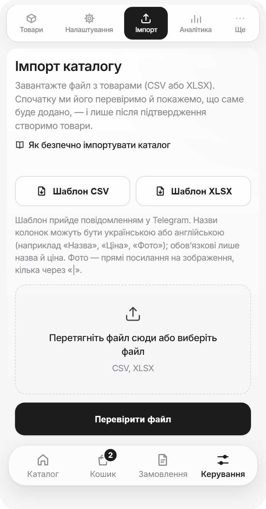
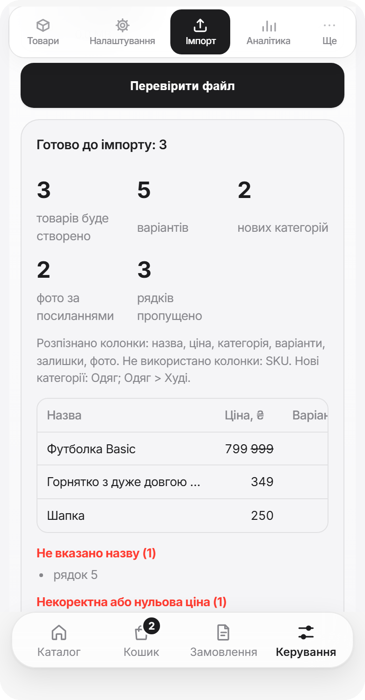
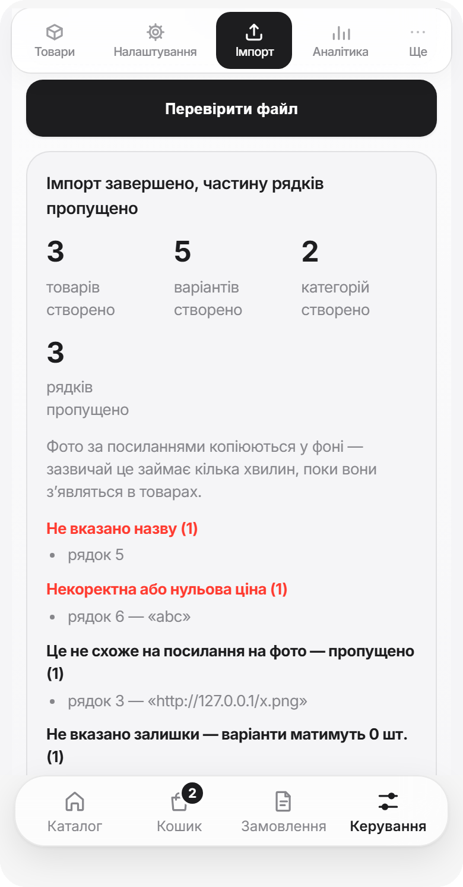

Імпорт каталогу¶
Завантажте всі товари одним файлом замість того, щоб додавати їх по одному. Система спочатку перевіряє файл і показує, що саме буде додано, — і лише після вашого підтвердження створює товари. Помилились — імпорт можна скасувати.
Де знаходиться
Керування → Ще → Імпорт (або кнопка Імпорт товарів на екрані Товари). Потрібен тариф Pro або вище; на нижчому тарифі вкладки немає.
Як це працює¶
1. Візьміть шаблон. Натисніть Шаблон CSV або Шаблон XLSX — файл-приклад прийде вам у Telegram. Або завантажте готові приклади нижче.
2. Заповніть. Відкрийте файл в Excel, Google Таблицях чи Numbers, замініть приклади своїми товарами. Перший рядок із назвами колонок не видаляйте.
3. Збережіть. Для CSV оберіть кодування UTF-8 (в Excel це CSV UTF-8 (розділений комами)), інакше українські літери зіпсуються. XLSX зберігається як є.
4. Перевірте. Оберіть файл і натисніть Перевірити файл. Нічого ще не створюється.
5. Підтвердіть. Натисніть кнопку з кількістю товарів, наприклад Імпортувати 5 товарів.
6. Передумали? Одразу після імпорту — Скасувати цей імпорт.

Приклади файлів на 5 товарів — з варіантами й залишками, знижкою, категорією з підкатегорією, товаром «під замовлення» й прихованим товаром:
Безпечний спосіб імпорту
Не заливайте одразу весь каталог. Візьміть файл на 5–10 позицій, імпортуйте, а потім відкрийте кілька товарів руками і перевірте: назва, ціна, категорія, фото, режим залишків. Якщо все правильно — заливайте решту.
Що ви побачите після «Перевірити фай뻶
Система показує:
- скільки товарів і варіантів буде створено, скільки рядків пропущено;
- які колонки розпізнано, а які не використано;
- які нові категорії з'являться;
- перші рядки таблицею — щоб звірити назву, ціну, варіанти й кількість фото;
- помилки (рядок пропущено — червоним) і зауваження (рядок додасться, але є на що глянути), згруповані за типом, із номерами рядків.
Якщо все влаштовує — Імпортувати …. Якщо ні — виправте файл і натисніть Перевірити файл ще раз, або Скасувати.

Які колонки заповнювати¶
Обов'язкові лише назва і ціна. Решту можна залишити порожніми або видалити з файлу. Назви колонок можна писати англійською (як у шаблоні) або українською — великі й малі літери не важливі. Якщо якусь колонку не розпізнано, Перевірити файл скаже, яку саме не буде використано.
| Колонка | Що вписати |
|---|---|
nameНазва, Товар |
Назва товару. Обов'язково. Приклад: Худі Oversize |
price_uahЦіна, Вартість |
Ціна в гривнях, більша за нуль. Підійде 1299, 1 299, 1299,50, 1299 грн; копійки округлюються. Обов'язково.Приклад: 1899 |
compare_at_price_uahСтара ціна |
Ціна до знижки. Має бути вищою за звичайну, інакше її буде проігноровано. Приклад: 2299 |
descriptionОпис |
Опис товару |
categoryКатегорія, Група |
Категорія. Для підкатегорії напишіть Розділ > Підрозділ. Якщо такої категорії ще немає, її буде створено.Приклад: Одяг > Худі |
inventory_modeОблік |
tracked (Відстежувати залишки) або untracked (Без ліміту залишку). Якщо залишити порожнім: з варіантами й залишками буде tracked, в усіх інших випадках untracked |
option_labelНазва варіанта |
Як називається вибір: Розмір, Колір, Об'єм |
optionsВаріанти, Розміри |
Самі варіанти через |Приклад: S|M|L|XL |
stocksЗалишки, Кількість |
Залишки в тому ж порядку, що й варіанти, через |Приклад: 6|10|8|3 |
photosФото, Зображення |
Прямі посилання на фото через |, до 10 штук. Дивіться розділ «Фото»Приклад: https://a.com/1.jpg |
is_activeАктивний, Показувати |
так — товар видно в каталозі, ні — приховано |
Під назвою колонки курсивом — інші назви, які теж розпізнаються (їх можна писати українською).
---|---|---|---|
| name | Назва, Товар, Назва товару | Назва товару. Обов'язково | Худі Oversize |
| price_uah | Ціна, Вартість, Ціна грн | Ціна в гривнях, більша за нуль. Підійде 1299, 1 299, 1299,50, 1299 грн; копійки округлюються. Обов'язково | 1899 |
| compare_at_price_uah | Стара ціна, Ціна до знижки | Ціна до знижки. Має бути вищою за звичайну, інакше її буде проігноровано | 2299 |
| description | Опис | Опис товару | Щільний футер з начосом |
| category | Категорія, Група | Категорія. Для підкатегорії напишіть Розділ > Підрозділ. Якщо такої категорії ще немає, її буде створено | Одяг > Худі |
| inventory_mode | Облік | tracked (Відстежувати залишки) або untracked (Без ліміту залишку). Якщо залишити порожнім: з варіантами й залишками буде tracked, в усіх інших випадках untracked | tracked |
| option_label | Назва варіанта | Як називається вибір | Розмір |
| options | Варіанти, Розміри, Розмір | Самі варіанти через | | S|M|L|XL |
| stocks | Залишки, Кількість | Залишки в тому ж порядку, що й варіанти, через | | 6|10|8|3 |
| photos | Фото, Зображення, Картинки | Прямі посилання на фото через |, до 10 штук. Дивіться розділ «Фото» | https://a.com/1.jpg |
| is_active | Активний, Показувати | так — товар видно в каталозі, ні — приховано | так |
Кілька значень в одній клітинці¶
Варіанти, залишки й фото записуються в одну клітинку, тому їх потрібно розділяти. Найнадійніше — вертикальна риска | (на клавіатурі зазвичай над Enter, з Shift): S|M|L.
Працюють також крапка з комою (S;M;L), кома (S,M,L) і перенос рядка всередині клітинки (Alt+Enter в Excel). Але в одній клітинці використовуйте лише один вид роздільника. Якщо в назві варіанта є кома, наприклад 1,5 л, розділяйте варіанти саме через |: 0,5 л|1,5 л.
Варіанти й залишки¶
Перший залишок належить першому варіанту, другий — другому і так далі.
options |
stocks |
Що вийде |
|---|---|---|
S|M|L |
6|10|8 |
S — 6 шт., M — 10 шт., L — 8 шт. |
42|43 |
3|0 |
42 — 3 шт., 43 — немає в наявності |
150 мл|300 мл |
порожньо | Товар «без ліміту залишку» з двома варіантами |
Залишків можна не вказувати, якщо товар продається без ліміту. Якщо залишків менше, ніж варіантів, решта отримає 0. Для зручності підійде й запис S:6|M:10|L:8 в одній колонці options.
Товар із відстеженням залишків без варіантів не купити
Якщо вказати tracked, але не вказати варіанти й залишки, товар створиться, проте покупець не зможе його замовити. Перевірити файл попередить про такі рядки. Для товарів без розмірів і кольорів вказуйте untracked або просто залишайте колонку порожньою.
Фото¶
У файл імпорту можна додати лише посилання на фото в інтернеті. Фотографії з комп'ютера чи телефона до файлу вставити не можна — ні в CSV, ні в XLSX.
Посилання має бути прямим: якщо відкрити його в браузері, ви бачите лише саму картинку, без сторінки навколо і без входу в акаунт. Зазвичай такі посилання закінчуються на .jpg, .png або .webp.
| Підійде | Не підійде |
|---|---|
| Фото на вашому сайті чи хостингу зображень | Google Диск, Dropbox, iCloud |
Пряме посилання на файл (…/photo.jpg) |
Сторінки в Instagram, OLX, Vinted, Telegram-каналі |
| Посилання, що вимагають входу в акаунт |
Як це працює: товар створюється одразу, а фото підтягуються у фоні й з'являються в товарі за кілька хвилин. Якщо посилання не вдалося завантажити, товар залишається, а фото потрібно додати вручну.
Як додати фото з комп'ютера або телефона
Імпортуйте товари без фото, потім відкрийте товар, у блоці Фото товару натисніть Додати фото і оберіть знімки з галереї телефона або з папки на комп'ютері. Можна вибрати відразу кілька.
Повторний імпорт і дублікати¶
Якщо в каталозі вже є товар із такою самою назвою (великі й малі літери та зайві пробіли не враховуються), рядок із файлу пропускається. Тому виправлений файл можна безпечно завантажити ще раз: уже додані товари не задвояться.
Якщо потрібно додати такі товари все одно, увімкніть галочку Додавати й товари, назви яких уже є в каталозі — кількість у перевірці оновиться.
Імпорт лише додає товари
Імпорт не змінює ціни, залишки чи фото товарів, які вже є в каталозі. Для таких змін відкривайте товар і редагуйте його.
Результат і скасування¶
Після Імпортувати … ви побачите підсумок: скільки товарів, варіантів і категорій створено, скільки рядків пропущено.
Кнопка Скасувати цей імпорт (потрібно підтвердити другим натисканням) приховує всі товари, додані цим імпортом. Це можна зробити протягом 7 днів. Створені імпортом категорії залишаються.

Обмеження¶
- до 5 МБ і до 2000 товарів в одному файлі — більший каталог діліть на частини;
- для кожного товару потрібні назва й ціна більша за нуль, інакше рядок пропускається;
- у XLSX дані мають бути на першому аркуші;
- скільки товарів можна тримати в магазині, визначає ваш тариф — дивіться Підписка;
- за хвилину можна виконати обмежену кількість перевірок і імпортів — якщо побачите «Забагато спроб», зачекайте хвилину.
Що означають зауваження після перевірки¶
Список зауважень і помилок
Помилки — рядок не буде додано:
- Не вказано назву — заповніть колонку з назвою.
- Некоректна або нульова ціна — вкажіть ціну числом, більшою за нуль.
- Надто велика ціна — перевірте, чи не зайві нулі.
Зауваження — рядок буде додано, але гляньте на нього:
- Товар з такою назвою вже є в каталозі / назва повторюється у файлі — рядок пропущено, щоб не створити дубль.
- Це не схоже на посилання на фото — це фото пропущено, товар буде додано без нього.
- Забагато фото — взято перші 10.
- Не вказано залишки — варіанти отримають 0 шт., доки ви не вкажете кількість.
- Залишків менше, ніж варіантів — решта варіантів матиме 0 шт.
- Облік залишків увімкнено, але немає варіантів — товар не можна буде замовити.
- Залишок без варіантів не враховано — кількість нема до чого прив'язати.
- Стара ціна має бути вищою за ціну — знижку не додано.
- Ціну округлено — у каталозі ціна в цілих гривнях.
- Категорії бувають двох рівнів — третій і далі рівні відкинуто.
- Назву або опис скорочено — перевищено допустиму довжину.
Помилки, які можуть з'явитися замість перевірки
- Файл завеликий / забагато рядків — розділіть каталог на кілька файлів.
- Не вдалося прочитати CSV — збережіть файл у кодуванні UTF-8.
- Не вдалося відкрити файл — перевірте, що він не пошкоджений і це справді CSV або XLSX.
- Не знайдено колонок з назвою та ціною — завантажте шаблон і скопіюйте дані в нього.
- Імпорт уже виконується — зачекайте, поки завершиться попередній.